20 candidates for Emmet's technique library (session 3D, H-26). Each was found in your instruction books and ranked by how widely official models in the LDraw OMR join its key parts (1315 sets mined). Each picture is a render of my sketch of it in Emmet's DSL, which validates with no findings; an accepted sketch becomes the technique, with its tests and render, and a rejected one is dropped. Nothing is taken from the models' files or the books' pages (D-48). Every candidate starts as Accept: switch the ones you don't want, add a note if it helps, then copy your answers and paste them to Claude.
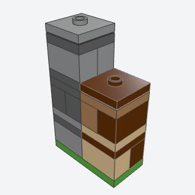
block_columna stack of game blocks on the 2 x 2 grid, each a cube 5 plates tall, textured by mixing shades.
The base unit of any blocky build: a pillar, a tower corner, or a stone or wood block of the right cube size, in mixed shades.
Note: The scale rule (2 x 2 studs, 5 plates a block) as a part recipe; the other sketches here share it. Key parts are very common.
x, y, z, blocks, colors, height, seed, capbatch-11/block_column.py3004 + 3022 + 87580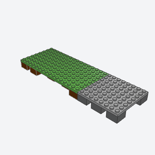
raised_module_basea slab of game terrain on dirt-colored legs, one brick off the table, like a chunk cut out of a block world.
The base for any blocky scene: a slab on dirt legs, cut out of the world, that butts against the next module on the 2-stud grid.
Note: Related to landing_zone; here the slab stands on brick legs a brick up, with seams on legs.
x, y, z, length, depth, top, dirt, spacing, seedbatch-11/raised_module_base.py3003 + 92438 + 41539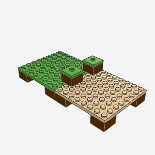
module_link_blockblocks set across the seam of two terrain modules, locking them into one scene and reading as one more grass block.
Locking two terrain modules together so the joint reads as one more grass block.
Note: The book drops links into notches left in the module tops; this sketch sets them on top of the two modules, which needs no notch but stands a block proud.
x, y, z, length, axis, links, wide, dirt, grassbatch-11/module_link_block.py3003 + 87580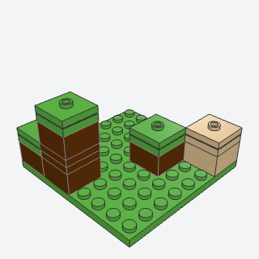
grass_blocksingle raised blocks scattered over a lawn, each a dirt brick under a grass top with one stud.
Scattering raised grass, sand, or stone blocks over a flat lawn so it reads as a block world.
Note: The book's block is a brick and a jumper (4 plates); this adds a grass plate between to make the 5-plate cube.
x, y, z, length, depth, count, tall, seed, dirt, grassbatch-11/grass_block.py3003 + 87580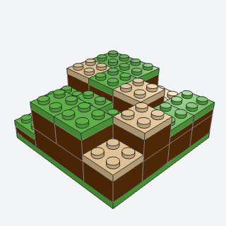
stepped_block_terraina hill or dune that rises in square terraces on the 2-stud grid, never in slopes, its top in square patches of two or three materials.
Hills, dunes, and banks in a blocky scene, terraced on the block grid with patches of grass and sand.
Note: VARIANT of hillside: square steps on the 2-stud grid, no slopes. Folds in voxel_color_patch_ground (the top plates' material patches).
x, y, z, length, depth, peak, plate_steps, seed, body, topsbatch-11/stepped_block_terrain.py3001 + 3003 + 3022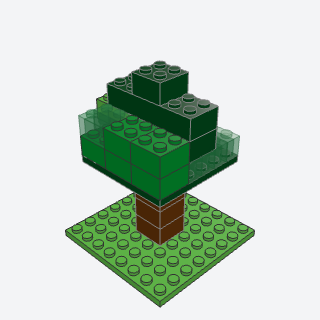
block_treea blocky tree, a square trunk under a cube-ish canopy of mixed greens with see-through leaf blocks and a ragged outline, built apart and placed as a submodel.
A tree for any blocky scene: square trunk, cube-ish canopy in mixed greens with see-through leaf blocks.
Note: VARIANT of tree. The book hangs side blocks on brackets (99207); this sketch pushes edge blocks a stud out instead, which breaks the outline without brackets. The trans-green blocks are two 1 x 2 bricks (3065), since 3003 was never made in Trans Green.
x, y, z, trunk, seed, trunk_color, leaves, see_throughbatch-11/block_tree.py3003 + 3958 + 3065 (some of its parts weren't confirmed from the book; I'd pin them when writing it)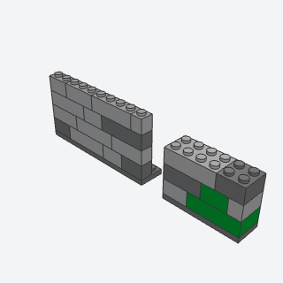
speckled_block_walla wall whose texture is two or three shades of one material mixed at random, the way a game draws cobblestone, moss, or planks.
Cobblestone, mossy, or wooden walls in a blocky build, textured by mixing two or three shades at random.
Note: A color pass over a running bond, like masonry_wall in mixed shades; width 2 builds it of whole blocks.
x, y, z, length, rows, width, colors, accent, seedbatch-11/speckled_block_wall.py3004 + 3622 + 3010 + 3001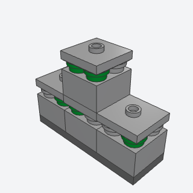
mossy_stone_blocka gray game block with green showing in a thin band around its side, like moss in the seams.
A stone block with moss in its seams, for ruins, wells, and cave edges in a blocky scene.
Note: The book's unit is a plate, round plates, and a jumper (3 plates); this puts it on a 2 x 2 brick to make the 5-plate cube.
x, y, z, blocks, moss, seed, stone, moss_colorbatch-11/mossy_stone_block.py6141 + 87580 + 3003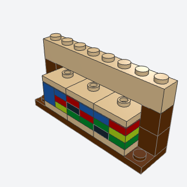
bookshelf_blocka 2 x 2 game block of wood whose sides show rows of colored book spines.
Furniture for a blocky house: a block of book spines, alone or three in a row as a shelf wall.
x, y, z, count, axis, seed, wood, booksbatch-11/bookshelf_block.py3005 + 3024 + 87580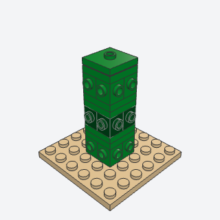
cactus_columna 2 x 2 green column of game blocks with studs on every side, the studs read as spines.
A desert cactus in a blocky scene: a green column with studs on every side as spines.
Note: Built the way the second book does it (bricks with studs on four sides, 4733). The first book's version turns a bracket 1 x 2 - 2 x 2 up (99207) on each block, but that bracket's upright fills the 1 x 2 above its base, so it can't sit under the next 2 x 2 block as the research note has it.
x, y, z, blocks, seed, colorsbatch-11/cactus_column.py4733 + 87580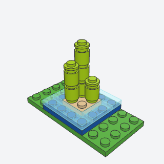
reed_stalkstall lime stalks growing from a sand block in a square of water, the game's sugar-cane look.
Reeds or cane at a pond's edge in a blocky scene: lime stalks from a sand square in water.
x, y, z, heights, seed, water, surface, sand, stalkbatch-11/reed_stalks.py3062b + 6141 + 3031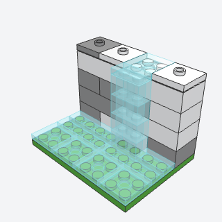
block_water_and_fallsa square pool set flush in the ground and a column of see-through blocks falling into it down a stone face, water the way a block world draws it.
Water in a blocky scene: a flush square pool and a column of see-through blocks falling down a stone face.
Note: VARIANT of pond and waterfall: square, flush, on the grid. The book's stream also uses 2 x 2 slopes; this one is 1 x 2 bricks only, true to the no-slope rule.
x, y, z, width, rows, pool, seed, stone, waterbatch-11/block_water_and_falls.py3004 + 3068b + 87580 (some of its parts weren't confirmed from the book; I'd pin them when writing it)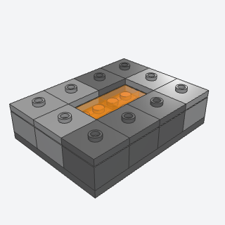
lava_inseta glowing square of lava set a plate down into a stone floor of blocks, for a forge or a cave.
A forge floor or a cave: a glowing lava square set a plate down in a rim of stone blocks.
Note: No 2 x 2 tile in Trans Orange, so the glow layer is 1 x 2 tiles.
x, y, z, length, depth, seed, stone, lava, glowbatch-11/lava_inset.py3069b + 87580 + 3003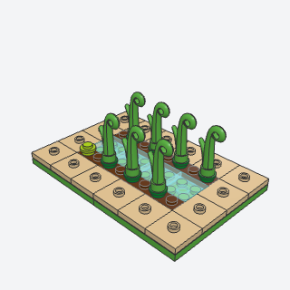
crop_fielda tilled field of crops in rows on dark soil, a water channel down its middle and a rim of smooth blocks around it.
A farm in a blocky scene: rows of crops on soil, a water channel down the middle, and a rim of jumper blocks.
Note: The book's channel is a 1-wide line of tiles; on the 2-stud grid with an even field it is 2 wide here. Uses jumper_rim's method for the rim. The grass stem (15279) has no connector data but seats cleanly on its round plate.
x, y, z, length, depth, seed, soil, rim, water, cropbatch-11/crop_field.py15279 + 87580 + 3068b (some of its parts weren't confirmed from the book; I'd pin them when writing it)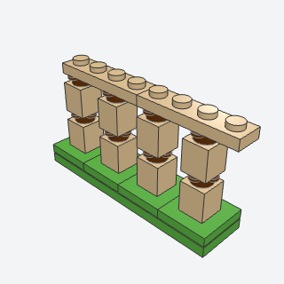
block_fence_postthin fence posts with stub rails sticking out four ways, each centered on its block, the way a game draws a fence.
A fence for a blocky farm or yard: thin posts with tab rail stubs, each centered on its block.
Note: VARIANT of fence (voxel posts on jumpers). The rail plates link posts in pairs, so a long run has a gap in the rail every other bay.
x, y, z, posts, axis, rail, post, tabs, seatbatch-11/block_fence_post.py33291 + 87580 + 3005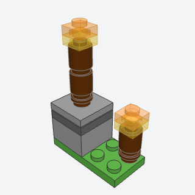
stick_torcha thin wooden stick with a glowing square flame on top, the blocky-world torch.
Lighting in a blocky scene: a stick with a square flame, on a block's center or a ground stud.
Note: VARIANT of torch_sconce, free-standing; no wall clip version.
x, y, z, height, centered, stick, seat, flamebatch-11/stick_torch.py3062b + 3024 + 87580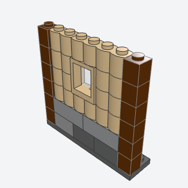
plank_and_stone_walla blocky house wall, light wood planks over a speckled stone footing, with dark log posts at its ends and a plain window set in the planks.
The wall of a blocky house: planks over a speckled stone footing, log posts at the ends, a plain window.
Note: VARIANT of masonry_wall / clapboard_siding: two materials and log corners. The log bricks' ridges run up and down (as the part is), reading as vertical planks.
x, y, z, length, stone_rows, plank_rows, window, seed, stone, plank, logbatch-11/plank_and_stone_wall.py30136 + 30137 + 60592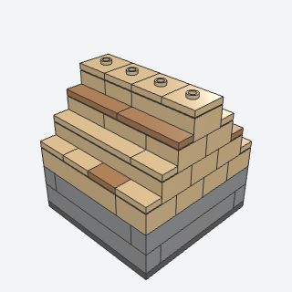
stepped_plank_roofa gable roof with no slopes, climbing in 1-stud steps of plank-faced courses to a ridge of blocks, the blocky-world roof.
The roof of a blocky house: a gable climbing in 1-stud steps of plank treads to a ridge of jumper blocks, no slopes.
Note: VARIANT of gable_roof. Doesn't lift off as one piece; the courses are stacked on the walls.
x, y, z, length, depth, seed, color, planksbatch-11/stepped_plank_roof.py3001 + 6636 + 87580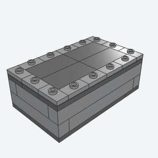
flat_jumper_roofa flat roof that lifts off, tiled smooth in the middle and ringed with jumper plates so its edge reads as a row of blocks, one stud each.
A flat roof for a blocky forge or shed that lifts off, tiled smooth with a rim of one-stud blocks.
Note: VARIANT of lift_off_roof_seat; includes jumper_rim (1 x 2 jumpers in a 1-stud ring, as on the book's forge roof).
x, y, z, length, depth, base, tiles, rimbatch-11/flat_jumper_roof.py3794b + 87079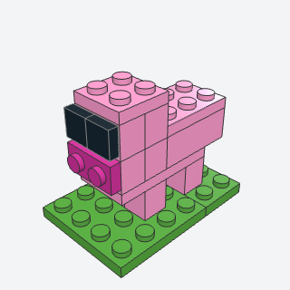
block_beasta game animal made of boxes, a box body on four box legs with a box head and a face of flat squares, built apart and placed as a submodel.
Animals for a blocky farm: a box body on box legs with a box head and a face of tiles; a pig in the default colors.
Note: The book's head is a printed 2 x 2 brick; here the face is plain tiles and a sideways plate on a brick with studs on one side (11211), since Emmet uses no prints.
x, y, z, facing, body, snout, eyesbatch-11/block_beast.py11211 + 3070b + 3002 (some of its parts weren't confirmed from the book; I'd pin them when writing it)